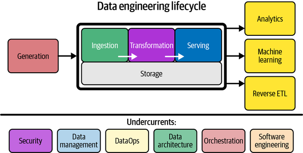
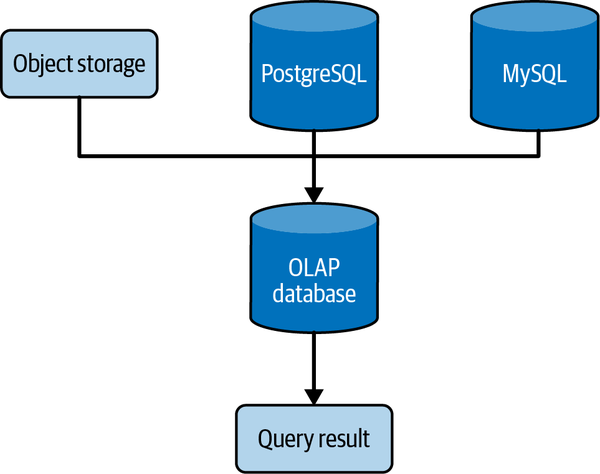
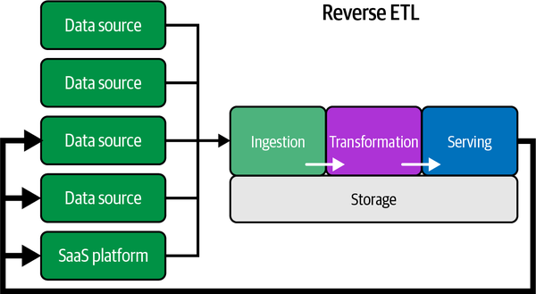

Ingeniería de datos
La ingeniería de datos construye la base para la ciencia de datos y la analítica de datos en producción.
Antes del Big Data ya había ingeniería de datos, entendida como las operaciones necesarias para permitir el acceso a los flujos de información, mediante procesos ETL, pero con el auge del Big Data y la ingente cantidad de herramientas disponibles su importancia se ha multiplicado.
La ingeniería de datos trata del movimiento, manipulación y gestión de los datos. Si buscamos una definición más completa podemos decir que se centra en el desarrollo, implementación y mantenimiento de los sistemas y procesos que recuperan los datos en crudo y produce información consistente y de alta calidad que da soporte a los diferentes casos de uso, como pueden ser la analítica de datos o el machine learning.
El encargado de gestionar su ciclo de vida es el ingeniero de datos, recuperando los datos desde los sistemas origen y sirviendo los datos a los futuros consumidores, ya sean científicos de datos, herramientas de visualización o modelos de IA.
Podríamos aventurarnos a decir que la época del Big Data ya ha pasado, ya que el avance de las tecnologías ha simplificado el uso de grandes volúmenes de datos, con lo que ya no necesitamos distinguir entre small y big data. Al fin y al cabo son datos, y toda empresa se centra en resolver sus problemas con los datos y obtener el mayor valor, independientemente del tamaño de éstos. Los antiguos ingenieros de Big Data ahora son ingenieros de datos.
Científico de datos
La relación existente entre un ingeniero de datos y un científico, es que el primero le deja los datos preparados al segundo, obteniendo los datos y dándoles valor para que el científico realice la analítica y la ciencia de datos.
Si nos centramos en el término de analítica de datos, se refiere al análisis de grandes volúmenes de datos (big data) para encontrar patrones y tendencias que permita tomar decisiones.
Roles
Los ingenieros de datos trabajan con plataformas de Big Data como Spark/Databricks o Snowflake (antiguamente todo se basada en el ecosistema Hadoop) y bases de datos relacionales, NoSQL y sistemas OLAP.
Además, ser ingeniero de datos implica tener destrezas en el modelado de datos, integración de datos, transformación de datos, calidad y gobernanza del dato. El objetivo es ofrece una infraestructura de datos eficiente y confiable que dé soporte a los procesos empresariales para la toma de decisiones.
Además del ingeniero de datos en general, podemos tener roles más específicos como pueden ser:
- Product data engineer: encargado de instalar, configurar y mantener los productos del equipo de ingeniería de datos, como pueden ser Airflow, Kafka o Spark
- Pipeline data engineer: encargado de trabajar con el flujo de datos, con conocimiento de Python, SQL, Spark así como trabajar con lagos de datos o data lakehouse.
- BI Data engineer: SQL y herramientas de visualización como Power BI o Tableau, para mostrar analíticas.
Además, un ingeniero de datos interacciona con otros tipos de roles a lo largo del desarrollo de un proyecto, dependiendo de si son roles asociados a la producción de los datos (ingenieros de software, ingenieros de datos o DevOps, etc...) o a su consumición (por ejemplo, ingenieros ML, analistas de datos o científicos de datos).
Ciclo de vida
El ciclo de vida del dato se centra en los objetivos que debe cumplir, dejando de lado las tecnologías necesarias.
Las fases del ciclo de vida se pueden resumir a muy alto nivel en tres:
- Generación: quién, dónde, cómo y cuándo se crean los datos, ya sean datos analógicos o digitales, ficheros en diferentes formatos, APIs, bases de datos OLTP, sistemas OLAP, logs, etc...
- Almacenamiento (ver siguiente apartado).
- Consumo (en amarillo).

Ciclo de vida de la Ingeniería de datosAlmacenamiento
Antes de desgranar la fase de almacenamiento, es necesario conocer:
- las características básicas de las tecnologías de almacenamiento físico (discos magnéticos / HDD, discos sólidos / SSD) como son la velocidad de transferencia (200-300MB/s en HDD a varios GB/s en SSD) o la cantidad de operaciones de E/S por segundo (de 50 a 500 IOPS en un HDD a decenas de miles en un SSD) así como la memoria RAM, 1000 veces más rápida que un disco SSD, con velocidades de transferencia cercanas a 100GB/s y millones de IOPS. Otros conceptos que debemos conocer son la serialización de los datos en formatos de archivo basados en filas o columnas (como pueda ser Apache Parquet) y la compresión de datos.
- los sistemas de almacenamiento, ya sean locales o distribuidos en un NAS o en el cloud (recuerda el acrónimo BASE), el almacenamiento de bloques o de objetos, las bases de datos relaciones, los sistemas basados en cachés/memoria (por ejemplo, Redis) o el sistema de archivos distribuidos de Hadoop (HDFS).
- las abstracciones de almacenamiento, entendida como la organización de los datos y los patrones de consulta que se construyen sobre los sistemas de almacenamiento, como son el data warehouse como solución OLAP para datos estructurados (por ejemplo, mediante AWS Redshift), el lago de datos que permite almacenar en crudo cualquier tipo de dato (mediante un ecosistema Hadoop o el uso de S3 y diversos servicios de AWS como Athena) y la evolución en el data lakehouse que aglutine las ventajas de ambos sistemas, tanto la posibilidad de trabajar con datos no estructurados y almacenar los datos en crudo y agregados, como soporte robusto de esquemas y tablas y características tan necesarias como las modificaciones incrementales y el borrado de datos, por ejemplo, mediante productos como Databricks mediante DeltaLake o Snowflake.
 Almacenamiento de datos
Almacenamiento de datos
Separación de computación y almacenamiento
En los inicios del Big Data y a partir del ecosistema Hadoop, el objetivo era colocar los datos lo más cercano del procesamiento. Sin embargo, actualmente, si utilizamos un lago de datos, los datos residen en un lugar muy diferentes de donde se procesan. Uno de los motivos principales es la escalabilidad de los datos, así como su durabilidad y disponibilidad (vía la replicación de los mismos), tal como hace S3.
Para reducir la latencia de no tener los datos cerca pero aprovechar las ventajas de la escalabilidad de los datos, se tiende a crear una separación híbrida mediante el uso de cachés de datos, por ejemplo, en AWS EMR copiando los datos de S3 al sistema de archivos de HDFS, realizando el procesamiento y volviendo a colocarlos en S3.
Sobre el almacenamiento, se realizan las fases de Ingesta, Transformación y Serving.
Ingesta
La ingesta implica mover datos desde una fuente u origen al almacenamiento.
Aunque esta fase la estudiaremos en detalle en la sesión Ingesta de datos, conviene citar los conceptos de:
- pipeline de datos.
- las estrategias de ingesta como push (de la fuente al destino), pull (el destino llama a la fuente), o poll (comprobaciones periódicas de la fuente).
- si la ingesta se basa en ventanas temporales o por cantidad (ya sean elementos o tamaño de los datos).
- si la ingesta se realiza mediante snapshots (una foto de toda la fuente de origen) o de forma incremental.
- si utilizamos ficheros para exportar e ingestar los datos.
- las diferencias entre ETL y ELT.
Transformación
Fase que podemos desglosar en:
- Consultas, siendo muy importante saber analizar el plan de ejecución de las consultas y cómo funciona el optimizador de consultas de cada motor. Algunas recomendaciones relacionadas con las consultas son:
- Evitar el uso de joins, por ejemplo, persistiendo una consulta que realiza uno o varios joins en una nueva tabla para realizar las consultas sobre esta nueva tabla.
- A la hora de codificar las consultas, evitar el uso de subconsultas o tablas intermedias y utilizar CTE (expresiones de tabla común) para simplificar su mantenimiento.
- Evitar las consultas que escanean todos los datos, tanto todas las filas (full scan) como las columnas, filtrando o limitando los datos a recuperar y utilizando índices en el caso de utilizar un sistema que permita su uso.
- En el caso de consultas sobre datos en streaming, dominar los diferentes tipos de ventanas deslizantes y las marcas de agua.
- Modelado de datos para introducir la lógica de negocio en los datos, mediante la definición de los modelos conceptuales, lógicos y físicos, ya sean relacionales o no, así como la normalización o denormalización de las tablas resultantes. Además, conviene conocer el modelado multidimensional, ya sea la técnica de Kimball (mediante modelos en estrella con una tabla central de hechos y varias tablas para las dimensiones) o Data Vault (mediante Hubs, enlaces y satélites) para diseñar la estructura de nuestro data warehouse o data lakehouse.
-
Transformaciones, que unen el resultado de las consultas y los modelos de datos para generar valor y que podamos ver los datos transformados como una única entidad. En muchas ocasiones las consultas que necesitamos son muy costosas, accediendo a varios sistemas y tablas mediante múltiples joins y que tras la limpieza y agregación de los datos provocan que su rendimiento sea muy bajo (imaginad una consulta que tarde más de 20 minutos en ejecutarse). Estas consultas podemos persistirlas de forma temporal o permanente. Para ello:
-
Es necesario tener un sistema de orquestación bien definido que ejecute las consultas y realice las transformaciones.
- Podemos emplear tanto herramientas basadas en SQL (como Hive o Spark SQL) o en código (Pandas, PySpark, etc...)
-
Debemos conocer si las transformaciones se almacenarán en sistemas insert-only, donde no podemos modificar los datos existentes. Si se modifica o elimina un registro, el fichero completo debe reescribirse con los nuevos cambios. Así pues, si necesitamos modificar datos, podemos truncar y volver a cargar, añadir un nuevo registro con un campo que almacene la fecha de la modificación y el nuevo valor, etc...
Investiga
¿Y si necesitamos eliminar un registro? ¿Vaciamos la tabla y la cargamos con ese registro menos? Investiga el concepto de soft delete y sus variantes. - Podemos persistir las transformaciones mediante tablas y luego crear vistas o vistas materializadas (las cuales se recrean tras cada cambio en las tablas originales). - Algunas herramientas permiten el uso de consultas federadas, de manera que utilizan uno o varios sistemas externos para combinar los datos y devolver el resultado, por ejemplo, mediante tablas externas en Hive. Algunos sistemas OLAP permite convertir las consultas federadas en vistas materializadas.

Consulta federada
Serving
Finalmente, una vez tenemos los datos, se presentarán/entregarán para analítica, ML, ... es decir, para cumplir los objetivos para los que se creó el sistema. Es muy importante que cuando los datos lleguen a esta fase, se realice una validación de los mismos para dotar de confianza a los consumidores de los datos. ¿Quienes serán estos consumidores y cómo van a utilizar los datos? Estas preguntas nos las tendríamos que haber hecho en las fases iniciales.
Los casos de uso más empleados son:
- Analítica de datos: entendida como el descubrimiento, exploración, identificación y visibilidad de las principales características y patrones de los datos. Para ello, se utilizan métodos estadísticos, informes, cuadros de mandos, herramientas de Business Intelligence, etc... tanto para:
- la analítica de negocio (business analytics) que utiliza datos históricos y actuales para la toma de decisiones, por ejemplo, mediante un cuadro de mandos (dashboard) que utiliza gráficos y KPIs (key performance indicator). Se obtiene en gran medida de una ingesta batch de un data warehouse o lago de datos.
- la analítica operacional, que utiliza los datos para tomar medidas inmediatas. Mientras que la analítica de negocio se centra en tomar medidas a medio plazo y utilizando datos a más largo plazo, en la analítica operacional, nos interesan los datos más recientes que pueden alertar de un problema.
- la analítica embebida, entendida como la que se ofrece en las aplicaciones de datos para que usuarios externos obtengan mayor valor de la aplicación. Por ejemplo, la monitorización de las instancias de EC2 nos permite tomar decisiones a los usuarios sobre si debemos incrementar o reducir el tipo de instancia necesaria.
- Machine Learning: Si los datos que alimentan un entrenamiento ML son malos, el modelo será malo. Por ende, la elección de las características de entrada a los modelos ML debe seguir todas las fases del ciclo de vida del dato.
¿Cuánto de ML debe saber un ingeniero de datos?
- Diferencia entre aprendizaje supervisado, no supervisado y semisupervisado.
- Diferencia entre técnicas de clasificación y de regresión.
- Las distintas técnicas de tratamiento de datos de series temporales, tanto su análisis como su predicción.
- Cuándo utilizar las técnicas "clásicas" (regresión logística, aprendizaje basado en árboles, máquinas de vectores soporte) frente al aprendizaje profundo.
- ¿Cuándo utilizaría el aprendizaje automático de máquinas (AutoML) frente a la creación manual de un modelo de ML? ¿Cuáles son las ventajas y desventajas de cada enfoque en relación con los datos que se utilizan?
- Todos los datos que se utilizan para ML se deben convertir en numéricos. Si utilizamos datos estructurados o semiestructurados, nos aseguraremos que los datos se pueden convertir mediante ingeniería de características (feature engineering).
- Cómo codificar datos categóricos y los embeddings.
- ¿Cuándo es apropiado entrenar en local o en el cloud? ¿Cuándo utilizaría una GPU en lugar de una CPU? El tipo de hardware depende en gran medida del tipo de problema de ML que estemos resolviendo, de la técnica y del tamaño del dataset.
Para entregar los datos a los procesos ML se emplean:
- Ficheros, ya que no todos los usuarios tienen acceso a los sistemas donde se almacenan los datos y es común generar un fichero con los datos que necesitan. La forma de entregar los ficheros dependerá del caso de uso, los procesos de consumo de los ficheros, la cantidad y tamaño de los ficheros que se generen, quien accede al fichero y el tipo de datos (estructurado, semi o sin estructurar).
- Bases de datos, como data warehouses o lagos de datos, desde donde extraer los datos, realizar ingeniería de características y alimentar el modelo ML con el dataset obtenido.
- Sistemas de streaming.
- Federación de consultas, obteniendo los datos desde diversas fuentes, normalmente en modo de sólo lectura. Debemos tener en cuenta que como los datos están repartidos, el rendimiento es peor que si estuviera todo centralizado en una base de datos.
- Cuadernos Jupyter, que cargan los datos y entrenan los modelos directamente en el cuaderno, ya sea en local o en el cloud, donde evitamos los problemas de falta de memoria. Una vez probado el modelo, para el paso a producción, se suelen migrar los cuadernos a scripts que se integran dentro de un orquestador.
- Reverse ETL: en pocas palabras, consiste en volver a cargar los datos transformados en una fuente de origen. Por ejemplo, en el proyecto Lara, si con el audio generado a partir de una nueva muestra, el usuario nos dice que la predicción ha sido correcta, podemos insertar el nuevo audio etiquetado en la fuente de origen.

Reverse ETLÁreas transversales
Además de las fases, hay una serie de destrezas y ámbitos en los que se apoya (undercurrents), como son:
- La seguridad, destacando el principio de menor privilegio (PoLP) para personas y sistemas, controlando los tiempos, de manera que los usuarios sólo puedan acceder a los datos durante el tiempo necesario, o protegiendo su visibilidad mediante la encriptación, enmascaramiento, ofuscación o sistemas robustos de acceso. Destacar que la seguridad en sí misma da para un curso entero, de ahí la rama de la ciberseguridad y su aplicación a todos los ámbitos informáticos.
- La gestión del dato, entendida como un conjunto de facetas, como pueden ser:
- La gobernanza del dato, para asegurar la calidad, integridad, seguridad y usabilidad de los datos dentro de una organización. Para ello, hay que facilitar la descubribilidad (discoverability) de los datos permitiendo a los usuarios acceder a ellos y conocer de dónde provienen, cómo se relacionan unos datos con otros y el significado de cada uno de ellos, mediante la gestión de los metadatos.
- El modelado de los datos, ya sea de bases de datos relacionales, NoSQL, respuestas JSON a una llamada a un API REST o consulta a GraphQL.
- El linaje de los datos, permitiendo trazar el ciclo de vida del dato
- La integración e interoperabilidad, mediante la orquestación de procesos.
- La ética y privacidad de los datos, enmascarando los datos sensibles y cumpliendo las diferentes legislaciones vigentes.
- etc...
- DataOps, entendido como una colección de técnicas, flujos de trabajo y patrones de arquitectura que facilitan entregar valor a los clientes lo más rápido posible, con datos de alta calidad y bajo ratio de error, así como métricas claras para monitorizar y ofrecer transparencia en los resultados. Los tres elementos principales asociados a DataOps son:
- Automatización, por ejemplo, automatizando el despliegue de DAGs en Airflow o de dependencias Python hasta que se han probado en un entorno previo siguiente práctica de CI/CD.
- Monitorización y observabilidad, ya que los datos terminan por ensuciarse y debemos detectar los problemas lo más pronto posible.
- Gestión de incidentes, de manera que al detectar un fallo, automáticamente podamos resolverlo o volver a una versión funcional del aplicativo.
- Arquitectura de los datos, ya sean arquitecturas de micro-servicios, de big data, para IoT, etc...
- Orquestación, pudiendo ser uno de los elementos más importantes dentro de la ingeniería de datos, al coordinar los procesos que ingestan, transforman y almacenan los datos. A día de hoy, uno de las herramientas que todo ingeniero de datos debe dominar es Apache Airflow.
- Ingeniería del software, con técnicas como pueden ser el testing, el uso de funciones ventana para trabajar con datos en streaming, nociones de DevOps para desplegar infraestructura como código, herramientas de control de versiones, etc...
Un ingeniero de datos tiene varios objetivos a conseguir a través del ciclo de vida de los datos, producir el retorno en la inversión óptimo (ROI) y reducir costes (financieros y de oportunidad) y riesgos (relativos a seguridad y calidad de los datos), maximizando el valor de los datos y su utilidad.
Herramientas base
Además de las habilidades centradas en las soft skills que un desarrollador debe adquirir, todo buen ingeniero de datos debería tener destreza en, al menos, las siguientes tecnologías:
- Linux, y en concreto, bash para la realización de operaciones en el sistema operativo.
- SSH y conceptos de redes para acceder a máquinas remotas.
- Uso de APIs REST para ingestar datos de fuentes externas.
- Git, GitHub y GitHub Actions, para conocer todo el ciclo de CI/CD.
- Docker, como herramienta de gestión de contenedores para lanzar las diferentes herramientas.
- Cuadernos Jupyter sobre el que desarrollar procesos de extracción, transformación y carga de datos
- SQL, como lingua franca para la transformación de datos y posterior analítica.
También es recomendable tener soltura en algún lenguaje de programación, por ejemplo, Python. Un ingeniero de datos no es un desarrollador de software, pero sí que debe codificar scripts o pequeños programas que faciliten su día a día. Otro lenguaje que tiene cierta importancia dentro de la ingeniería de datos es Scala.
Referencias
- Libro Fundamentals of Data Engineering de Joe Reis y Matt Housley.
- Capítulo 1 - Data Engineering Described en abierto.
- What is Data Engineering?
- The MAD (Machine Learning, Artificial Intelligence & Data) Landscape 2025, 2024, 2023
Actividades
- (RABDA.1 / CEBDA.1a / 1p) Contesta a las siguientes preguntas justificando tus respuestas:
- ¿Qué relación hay entre un ingeniero de datos y un científico de datos?
- Enumera las fases del ciclo de vida del dato y define con un par de líneas cada una de ellas, desgranando también la fase de Almacenamiento.
- Indica en qué fase/s utilizarías la siguientes herramientas/tecnologías:
- PowerBI
- SQL
- MongoDB
- Airflow
- AWS S3
2.- (RAPIA.3 / CEPIA.3b y CEPIA.3c / opcional) Realiza los módulos 2 (Data-Driven Organizations) y 3 (The Elements of Data) del curso AWS Academy Data Engineering.
Contenido e imágenes de Ingeniería de datos, por Aitor Medrano, reproducidos bajo licencia CC BY-NC-SA 4.0.